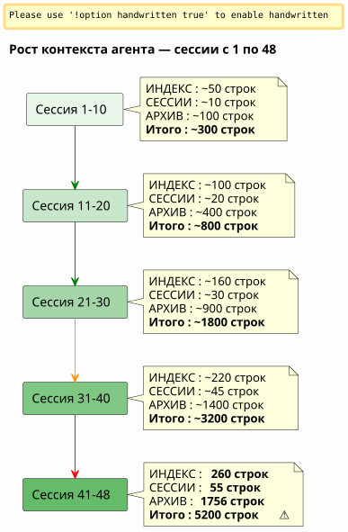

Скользящее окно и «холодная волна»: когда контекст агента переполняется и возникает необходимость архивирования без потерь
Опубликовано 26 April 2026
резюме
После 48 сессий над одним проектом и более 150 в целом, система управления Eager/Lazy, которую я тщательно построил, начала задыхаться. Файлы агентов, которые должны были быть лёгкими, весили в сумме 5200 строк. Автоматически загружаемый контекст рос быстрее, чем моя способность его контролировать. Эта статья рассказывает, как я концептуализировал механизм резервного копирования — между скользящим окном и идентичной холодной волной — чтобы поддерживать лёгкий активный контекст, никогда ничего не теряя.
Сигнал: 5200 строк
Я в полном разгаре сессии 048 на`magic-stick`, мой проект сборки live-ISO Linux. Opencode на меня смотрит. Как всегда, он автоматически загрузил мои файлы Eager в начале сессии —AGENT.adoc, PROMPT_REPRISE.adoc, .agents/INDEX.adoc. Ничего ненормального.
Однако что‑то не так. Ответы стали медленнее. Рассуждение стало более размытым. Агент забывает детали, которые были у него перед глазами всего два сообщения назад.
Я открываю терминал и ввожу:
wc -l .agents/INDEX.adoc .agents/SESSIONS_HISTORY.adoc \
.agents/archives/COMPLETED_TASKS_ARCHIVE_2026-04.adoc260 строк для INDEX. 55 строк для SESSIONS_HISTORY.1756 для COMPLETED_TASKS_ARCHIVE.
дело`sessions/`добавляет ещё ~3200 строк. Итого :5200 строкконтекста, которые загружаются, каким-то образом, во временной мозг агента.
Стратегия eager/lazy, которую я теоретически описал в предыдущей статье, работает — но у неё есть врождённый недостаток, которого я не ожидал: она не имеетнет механизма старения. Каждая сессия добавляет строку в INDEX, абзац в COMPLETED_TASKS, файл в sessions/. Ничего никогда не выходит. Контекст — это снежный ком, который растёт с каждой новой сессией.

Это не ошибка, это прямое следствие процедуры завершения сеанса, которая тщательно архивирует каждую деталь. Система стала жертвой своего собственного успеха.
Диагностика: тройная избыточность
Я прошу агента диагностировать проблему. Его ответ мгновенный и хирургический.
Файл |
строки |
Роль |
Проблема |
|
260+ |
EAGER (самозарядный) |
Таблица всех сессий с 001 —+1 строка за сессию |
|
55 |
желающий |
Сводная таблица —избыточность с INDEX |
|
1756 |
EAGER (неявный) |
Полные детали всех сессий апреля |
|
~5200 total |
LAZY (предполагаемый) |
Индивидуальные архивы, ноне используемыетак как всё уже находится в COMPLETED_TASKS |
Агент выявляет четыре коренные причины:
-
COMPLETED_TASKS_ARCHIVE поглощает всё— Вместо того чтобы указывать на архивы`.sessions/`, он полностью копирует каждую сессию.
-
INDEX.adoc служит полной историей— Таблица "Последние сессии" содержит 30+ записей.
-
избыточный SESSIONS_HISTORY.adoc— Та же информация, что и INDEX, другой формат.
-
Правило LAZY не соблюдено— COMPLETED_TASKS является неявно EAGER, так как он содержит всё.
его предложение радикально: ограничить INDEX до 10 сессий, очистить COMPLETED_TASKS переместить SESSIONS_HISTORY в LAZY чистый. Немедленная выгода:~1900 строк сэкономлено.
Это чисто, эффективно, логично. Но у меня проблема с этим подходом.
Почему я отказался от очевидного решения
Решение агента — это решение инженера, который оптимизирует кеш. Ограничить. Обрезать. Удалить избыточность.
Но эти «избыточности» не таковы. Каждый файл управления захватывает одноразный уголна той же реальности:
-
ИНДЕКС= макро вид, исполнительная панель
-
SESSIONS_HISTORY= линейная хронологическая таблица, оценённая
-
Архив выполненных задач= подробный рассказ с метриками
-
sessions/*.adoc` = индивидуальные архивы, полный контекст
Это не тупое дублирование. Это измножественная структурированная перспектива. Это именно то, что нужно для дистилляции — чтобы позже человек (или будущий лучше обученный LLM) мог пересекать углы и извлекать паттерны.
Представьте, что вам говорит специалист по данным: «Давайте уберём 3 из 6 столбцов — они коррелированы». Что вы ему отвечаете? Что корреляция — это не избыточность, когда каждый столбец отражает разную грань одного и того же явления. Что именно эта многомерная насыщенность делает набор данных пригодным к использованию.
Это моя интуиция. И я защищаю её от холодной рациональности агента.
_ Я не вижу в своей идее молчаливого «всё-в-одном». Мы не просто всё засовываем, а перемещаем структурированный результат процедуры завершения сессии — каждый файл со своим углом, со своими избыточностями, которые на самом деле являются обогащением. Именно такой многомерный материал будет лучше для дистилляции. _
Агент принимает удар. И исправляется.
Предложение: одинаковая холодная волна
Агент предлагает более тонкий механизм, который уважает мою интуицию о богатой выборке, одновременно решая техническую проблему взрывающегося контекста.
Принцип прост и прямо вдохновляется паттерномГорячее/Тёплое/Холодное хранилищеприменяется к управлению архивами :
-
Горячий (EAGER)= последние 10 сессий в INDEX, PROMPT_REPRISE сессии N+1, последние 2 файла сессии
-
Теплый (ЛЕНИВЫ)= SESSIONS_HISTORY недавний, SCRIPT_VERIFICATION, всю справочную документацию
-
Холод (backup/)= всё остальное, перемещённоеневредимый, без преобразования, без повторной индексации
----
----
----
.agents/
├── INDEX.adoc → Sessions N-9 à N (10 dernières)
├── SESSIONS_HISTORY.adoc → Sessions N-9 à N
├── SCRIPT_VERIFICATION.adoc → Dernière vérif (pas d'historique)
├── PROMPT_REPRISE.adoc → Session N+1 uniquement
├── sessions/ → Sessions N-1 à N uniquement
└── backup/
└── Y2026-sessions-001-039/ ← Vague froide, COPIE INTÉGRALE
├── INDEX.adoc → Sessions 001 à 039 (complet)
├── SESSIONS_HISTORY.adoc → Sessions 001 à 039 (complet)
├── COMPLETED_TASKS_ARCHIVE.adoc → Sessions 001 à 039 (complet)
└── sessions/ → 001.adoc, 002.adoc...
----
Ключ механизма :**Backup не является центральным индексом, это точная копия прошедшей волны.**. Когда мы превышаем предел из 10 активных сессий, мы ничего не удаляем. Мы ничего не переиндексируем. Мы ничего не объединяем. Мы берём пакет файлов агентов таким, каким он был в сессии N-10, и перемещаем его в`backup/`.
Активные файлы, они, обрезаны :
* INDEX: только последние 10 строк (скользящее окно)
* SESSIONS_HISTORY : тот же
* COMPLETED_TASKS_ARCHIVE : новый файл для текущего периода
* sessions/ : только последние 2 сессии
[plantuml, format=svg, id=diag-hot-warm-cold, alt="Architecture Hot/Warm/Cold du contexte agent — EAGER/LAZY/backup"]
----
@startuml
skinparam backgroundColor #FEFEFE
skinparam defaultTextAlignment center
skinparam wrapWidth 200
title Архитектура горячий / тёплый / холодный контекст-агента
package "HOT (EAGER)\nАвтоматически загружен\n~300 строк" as HOT #FFCDD2 {
file "INDEX.adoc\n(10 сессий)" as IDX_HOT
file "PROMPT_REPRISE\n(сессия N+1)" as PRO_HOT
file "AGENT.adoc\n(абсолютные правила)" as AG_HOT
}
package "WARM (LAZY)\nЗагружается по запросу\n~500 строк" as WARM #FFF9C4 {
file "SESSIONS_HISTORY\n(10 последних)" as HIS_WARM
file "SCRIPT_VERIFICATION\n(последняя)" as VER_WARM
file "PROCEDURES.adoc\n(шаблоны)" as PRO_WARM
file "*_REFERENCE.adoc\n(техническая документация)" as REF_WARM
}
package "COLD (backup/)\nНикогда не заряжен\nТолько для чтения человеком" as COLD #BBDEFB {
folder "Y2026-001-039/" as WAVE {
file "ИНДЕКС (полный)" as IDX_COLD
file "SESSIONS_HISTORY\n(полный)" as HIS_COLD
file "COMPLETED_TASKS\n(выполнено)" as ARCH_COLD
folder "сеансы/ (001-039)" as SESS_COLD
}
folder "Y2026-040-???\n(future)" as FUTURE
}
HOT --> WARM : "Агент поднимается\nпри необходимости"
WARM --> COLD : "Никогда автоматическое\nЧеловек идёт туда один"
note bottom of COLD
Règle : COPIE INTÉGRALE
Pas de transformation
Pas de réindexation
Read-only après archivage
end note
@enduml
----
Мгновенная выгода огромна: контекст EAGER переходит от**~5200 строк до ~300 строк**. Деление на 17. Не потеряв ни одной строки исторических данных.
== Почему это не мешок для всего
Агент, в своей первой итерации, опасался, что`backup/`станет чёрным ящиком — папкой, куда бросают файлы, которые никогда больше не будут открывать. Это законный страх. Но он основан на путанице.
Свалка — это когда бросают файлы**без структуры, без конвенции, без логики группировки**. Здесь резервная копия организована по периоду (Y2026-001-039), и каждая папка резервной копии содержит**та же структура**что дело`.agents/`активный: INDEX, SESSIONS_HISTORY, COMPLETED_TASKS_ARCHIVE, sessions/
Это не универсальное средство. Это**снимок с отметкой времени**. Можно даже сказать, что это упрощённый механизм версионирования — за исключением того, что он не версионирует файлы по отдельности, а версионирует весь пакет управления в момент T.
Когда вы хотите найти старую информацию, вам не нужен центральный индекс. У вас есть два варианта :
1. **grep` целевой**:`grep -r "zsh" backup/Y2026-001-039/`— и вы находите всё, что упоминает zsh в данный период, независимо от угла (INDEX, SESSIONS_HISTORY, архив сессии).
2. **ручная реинтеграция**: вы временно копируете папку резервной копии в активный контекст, и вы просите агента проанализировать этот конкретный период.
Индекс подразумевается. Он находится в самой структуре файлов — каждый из них уже является индексом со своей точки зрения.
== Метафора полок
Чтобы сделать механизм интуитивным, я концептуализировал его в три полки :
* **Полка 1 (EAGER)**— план работы. Что мне нужно *сейчас*. INDEX недавний, PROMPT_REPRISE, абсолютные правила. Лёгкий, немедленный, критичный.
* **Полка 2 (LAZY)**— справочная библиотека. Что я могу принести по запросу. Технические ссылки, недавняя история, процедуры. Более объёмная, но не загружена в память.
* **Пещера (backup/)**— холодные архивы. Все, что прошло, но что я не хочу выбросить. Агент никогда туда не заходит. Человек спускается туда, когда хочет дистиллировать.
Агент изначально предложил четвёртую полку — один`index-backup.adoc`который был бы LAZY и содержал бы оглавление всего бэкапа. Я отказался. Это была бы дополнительная избыточность в системе, которая уже страдает от линейного роста. Структура архивированных файлов уже является индексом.
== Датчик с двумя срабатывателями
Концептуализация была надёжной, но оставался слепой угол:**Когда именно запустить вращение?**Исходная статья идентифицировала это как открытый вопрос. Через два дня ответ был закодифицирован в файлах управления шести проектов: датчик с двумя триггерами.
=== Автоматический триггер — `N % 10 == 0
Первый триггер — математический. Когда номер сеанса является кратным 10 — сеансы 10, 20, 30, 40 — резервное копирование запускается автоматически в рамках процедуры завершения сеанса, сразу после шага 6.
Почему 10? Это компромисс между двумя противоположными силами: слишком короткое окно (5 сессий) теряет необходимый контекст для непрерывности; слишком длинное окно (20 сессий) не решает проблему раздутости контекста. Десять сессий, при темпе от одной до двух сессий в день, покрывают примерно неделю работы — достаточно, чтобы агент помнил последние решения, но недостаточно, чтобы контекст взорвался.
=== Триггер по порогу — 500 строк EAGER
Второй триггер динамический. Независимо от номера сессии, если накопившиеся файлы EAGER превышают**500 строк**, вращение срабатывает.
Этот порог защищает от сценария, в котором сессии являются исключительно продуктивными — много контента написано за мало сессий. Сессия, которая производит 120 строк редакционного контента, увеличивает `COMPLETED_TASKS_ARCHIVE` гораздо быстрее, чем сессия отладки, исправляющая две строки. Порог в 500 строк, измеряемый через`wc -l .agents/INDEX.adoc .agents/archives/COMPLETED_TASKS_ARCHIVE_*.adoc PROMPT_REPRISE.adoc`, захватывает эту асимметрию.
=== Ручной триггер — "резервное копирование с ротацией
Наконец, человек сохраняет контроль. Ключевые слова`rotation backup`, `backup rotation` ou `lance la rotation backup`запускают процедуру по запросу, независимо от окончания сеанса. Полезно, когда чувствуешь, что контекст становится тяжёлым, но ты ещё не достиг кратного 10, или когда хочешь архивировать этап работы перед началом нового.
[plantuml, format=svg, id=diag-capteur-trigger, alt="Les trois déclencheurs du capteur de rotation backup — automatique, seuil, manuel"]
----
@startuml
skinparam backgroundColor #FEFEFE
skinparam defaultTextAlignment center
skinparam wrapWidth 200
title Резервный датчик вращения — Три триггера
start
:Procédure de fin de session;
note right: Mots-clés "окончание сессии"\nou "останавливаемся здесь"
:Étapes 1 à 6\n(archivage standard);
note right
1. Archive sessions/N.adoc
2. MAJ PROMPT_REPRISE
3. MAJ SESSIONS_HISTORY
4. MAJ INDEX.adoc
5. MAJ TEST_COVERAGE
6. MAJ COMPLETED_TASKS
end note
if (N % 10 == 0\nOU\nEAGER cumulé > 500 lignes ?) then (oui)
:⚙️ Rotation Backup\n(étape 7);
note right
1. Créer backup/Y20XX-sessions-X-Y/
2. Copier intégrale INDEX + HISTORY
+ COMPLETED_TASKS + sessions/
3. Tronquer actifs à 10 sessions
4. Ajouter _Localisation active_
end note
else (non)
:Pas de rotation;
endif
:Checklist [✅] x 7\n(si applicable);
stop
@enduml
----
Эта схема показывает точное введение датчика в процедуру завершения сеанса. Шаг 7 является опциональным — он выполняется только если одно из двух условий истинно — но он систематически *проверена*. Финальный чек-лист включает`[✅] 7. Backup roté (si applicable)`.
=== Замкнутая петля
Этот датчик замыкает открытую предыдущей статьёй петлю. Управление Eager/Lazy решило проблему агента памяти между двумя сеансами. Механизм Hot/Warm/Cold решил проблему растущей памяти. Датчик с двумя триггерами решает проблему *когда* — снимая с человека умственную нагрузку по отслеживанию размера контекста.
[plantuml, format=svg, id=diag-boucle-fermee, alt="Les trois couches de la gouvernance agent — Eager/Lazy, Hot/Warm/Cold, Capteur"]
----
@startuml
skinparam backgroundColor #FEFEFE
skinparam defaultTextAlignment center
title Три слоя управления агентом
left to right direction
package "Слой 1 — Память\n(Статья 0108)" as C1 #E8F5E9 {
rectangle "**EAGER**\nПанель инструментов\nАвтоматически загружено" as EAG
rectangle "**LAZY**\nРуководство владельца\nЗагружается по требованию" as LAZ
EAG -[hidden]right-> LAZ
}
package "Слой 2 — Старение\n(Статья 0110)" as C2 #FFF9C4 {
rectangle "**HOT**\n10 активных сессий\n~300 строк" as HOT
rectangle "**WARM**\nСсылки\nПроцедуры" as WRM
rectangle "**COLD**\nbackup/\nХолодная волна" as CLD
HOT -[hidden]right-> WRM
WRM -[hidden]right-> CLD
}
package "Слой 3 — Триггер\n(Сегодня)" as C3 #BBDEFB {
rectangle "**Авто**\nN % 10 == 0" as AUTO
rectangle "Порог\n> 500 строк" as SEUIL
rectangle "**Manuel**\nрезервное копирование с ротацией" as MAN
AUTO -[hidden]right-> SEUIL
SEUIL -[hidden]right-> MAN
}
C1 --> C2 : "Память растёт\n→ нужен механизм\nстарения"
C2 --> C3 : "Старение\n→ нужен триггер\nдля его выполнения"
note bottom of C3
✅ Déployé sur 6 projets
magic-stick · bakery-gradle
plantuml-gradle · cheroliv.com
jhipster-gradle-plugins
quizz-benchmark-gradle
end note
@enduml
----
Три слоя накладываются логично. Первый слой даёт агенту память. Второй слой не позволяет этой памяти подавлять агента. Третий слой автоматизирует обслуживание этой памяти, чтобы человеку не приходилось думать о ней.
=== Эффективная миграция на cheroliv.com
Механизм не остался теоретическим. На`cheroliv.com`, первая ротация резервных копий была выполнена 29 апреля 2026 года — сеансы с -6 по 2 переместились в`.agents/backup/Y2026-sessions-neg6-a-002/` :
|===
|файл |Перед вращением |После вращения |выгода |`.agents/INDEX.adoc` |19 перечисленных сессий |10 сеансов (3-12) |-9 записей |`.agents/SESSIONS_HISTORY.adoc` |18 сессий |10 сеансов |-8 записей |`COMPLETED_TASKS_ARCHIVE` |161 строк (сеансы 1-12) |135 строк (сеансы 3-12) |-26 строк |`sessions/` |20 файлов |10 файлов |-10 файлов |**backup/** |несуществующий |1 холодная волна (10 архивированных сессий) |+1 холодный пакет
|===
Прирост строк был скромен — проект молодой, 12 сессий — но главное, что это**механизм установлен**. Следующая автоматическая ротация произойдёт в сессии 20, или ранее, если достигнуто 500 строк EAGER.
== Урок человек-агент
Эта сессия 048 научила меня чему-то фундаментальному о сотрудничестве с агентом ИИ.
У агента есть естественное смещение: он стремится к**оптимизировать**, à **упростить**, à **удалить избыточность**. Это смещение системы, обученной производить чистые и лаконичные ответы. При встрече с богатым и многомерным набором данных, её первоначальная реакция — свести его к самому простому виду.
Человек же, наоборот, имеет другую интуицию: он ощущает, что структурированная избыточность — это**преимущество**, не недостаток. Что разнообразие углов на одной и той же реальности именно то, что позволит, позже, получить качественную дистилляцию.
Не то, что агент ошибается. Дело в том, что его "optimum" не является моим. Агент оптимизирует для**настоящее**— непосредственный контекст, быстрый ответ на заданный вопрос. Человек оптимизирует для**будущее**— способность находить, пересекать, дистиллировать в течение трёх месяцев или трёх лет.
____ Что я хочу, это сырой материал. Твои размышления, твои колебания, твои ответы на мои вопросы. Не твой синтез. Синтез, я умею делать лучше тебя. Я хочу исходный материал. ____
Эта фраза, которую я ему сказал в конце сессии, подытоживает всё. Агент — это инструмент производства. Человек — это инструмент дистилляции. Управление не предназначено для того, чтобы агент сам всё понял — оно предназначено для того, чтобы человек позже мог поработать с произведённым материалом.
Идентичная холодная волна является архитектурным переводом этой философии: мы ничего не выбрасываем, ничего не объединяем, ничего не переиндексируем. Мы перемещаем пакет в неизменном виде. Дистилляция произойдёт позже, вручную, человеком.
== Логическое продолжение предыдущей статьи
Если вы прочиталиlink:/blog/2026/0108_gouvernance_agent_opencode_eager_lazy_post.html[статья о стратегии Eager/Lazy], вы заметите естественное развитие :
1. **Статья 0108**— Управление Eager/Lazy : *как* структурировать контекст агента на два уровня доступности
2. **Эта статья 0110**— Механизм бэкапа : *как* старить этот контекст, не теряя его, когда он становится слишком большим
Первая статья отвечала на вопрос: «Агент ничего не помнит между сессиями, как ему дать память?
Он отвечает на вопрос, неизбежно вытекающий из первого: «Память растёт после каждой сессии, как предотвратить её подавление агента без стирания?
Ответ укладывается в один шаблон:**Горячий/Теплый/Холодный**, применённый к файлам управления. И в одном принципе:**никогда ничего не терять, всегда всё переносить**.
== ссылки
* Предыдущая статья :link:/blog/2026/0108_gouvernance_agent_opencode_eager_lazy_post.html[Управление агентом ИИ с AsciiDoc]
* Мой сайт: https://cheroliv.com
* Проект`magic-stick`: https://github.com/cheroliv/magic-stick
---
*Хорошая система управления никогда не удаляет данные. Она хранит их.*
----
----
Ключ к механизму:**бэкап — это не центральный индекс, а точная копия предыдущей волны**. Когда количество активных сессий превышает 10, ничего не удаляется. Ничего не переиндексируется. Ничего не объединяется. Мы берем пакет файлов агентов в том виде, в котором он был в сессии N-10, и перемещаем его в`backup/`Пожалуйста, предоставьте текст для перевода.
Активные файлы, в свою очередь, усекаются:
* ИНДЕКС : только последние 10 строк (скользящее окно)
* SESSIONS_HISTORY : то же самое
* COMPLETED_TASKS_ARCHIVE : новый файл за текущий период
* sessions/ : только 2 последние сессии
[plantuml, format=svg, id=diag-hot-warm-cold, alt="Architecture Hot/Warm/Cold du contexte agent — EAGER/LAZY/backup"]
----
@startuml
skinparam backgroundColor #FEFEFE
skinparam defaultTextAlignment center
skinparam wrapWidth 200
title Архитектура Hot / Warm / Cold контекста агента
package "HOT (EAGER)\nЗагружается автоматически\n~300 строк" as HOT #FFCDD2 {
file "INDEX.adoc\n(10 сессий)" as IDX_HOT
file "PROMPT_REPRISE\n(сессия N+1)" as PRO_HOT
file "AGENT.adoc\n(абсолютные правила)" as AG_HOT
}
package "WARM (LAZY)\nЗагружается по запросу\n~500 строк" as WARM #FFF9C4 {
file "SESSIONS_HISTORY\n(10 последних)" as HIS_WARM
file "SCRIPT_VERIFICATION\n(последний)" as VER_WARM
file "PROCEDURES.adoc\n(шаблоны)" as PRO_WARM
file "*_REFERENCE.adoc\n(техническая документация)" as REF_WARM
}
package "COLD (backup/)\nНикогда не загружается\nТолько для чтения человеком" as COLD #BBDEFB {
folder "Y2026-001-039/" as WAVE {
file "INDEX (полный)" as IDX_COLD
file "SESSIONS_HISTORY\n(полный)" as HIS_COLD
file "COMPLETED_TASKS\n(полный)" as ARCH_COLD
folder "sessions/ (001-039)" as SESS_COLD
}
folder "Y2026-040-???\n(будущее)" as FUTURE
}
HOT --> WARM : "Агент обращается\nпри необходимости"
WARM --> COLD : "Никогда автоматически\nЧеловек заходит сам"
note bottom of COLD
Правило: ПОЛНОЕ КОПИРОВАНИЕ
Без преобразования
Без переиндексации
Только для чтения после архивации
end note
@enduml
----
Мгновенный выигрыш огромен: контекст EAGER меняется с**~5200 строк до ~300 строк**. Сокращение в 17 раз. Без потери ни одной строки исторических данных.
== Почему это не свалка для всего подряд
Агент в своей первой итерации опасался, что`backup/`станет «черным ящиком» — папкой, куда сбрасывают файлы, которые никогда больше не будут прочитаны. Это оправданный страх. Но он основан на заблуждении.
Свалка» — это когда сваливают файлы**без структуры, без соглашений, без логики группировки**. Здесь бэкап структурирован по периодам (`Y2026-001-039`), и каждая папка бэкапа содержит**та же структура**что папка`.agents/`активен: INDEX, SESSIONS_HISTORY, COMPLETED_TASKS_ARCHIVE, sessions/.
Это не свалка всего подряд. Это**снимок с меткой времени**Можно даже сказать, что это упрощенный механизм версионирования — с той лишь разницей, что он версионирует не отдельные файлы, а весь пакет управления в определенный момент времени T.
Когда вы хотите найти старую информацию, вам не нужен центральный индекс. У вас есть два варианта:
1. **целевой `grep**Пожалуйста, предоставьте текст для перевода.`grep -r "zsh" backup/Y2026-001-039/`— и вы находите всё, что упоминает zsh за этот период, независимо от ракурса (INDEX, SESSIONS_HISTORY, архив сессии).
2. **Ручное восстановление**: вы временно копируете папку с резервной копией в активный контекст и просите агента проанализировать этот конкретный период.
Индекс является неявным. Он заложен в самой структуре файлов — каждый из которых уже представляет собой индекс со своей собственной точки зрения.
== Метафора полок
Чтобы сделать механизм интуитивно понятным, я представил его в виде трех полок:
* **Полка 1 (EAGER)**— рабочий план. То, что мне нужно *сейчас*. Свежий INDEX, PROMPT_REPRISE, абсолютные правила. Лаконично, незамедлительно, критически важно.
* **Полка 2 (LAZY)**— справочная библиотека. То, что я могу найти по запросу. Технические данные, недавняя история, процедуры. Более объемно, но не загружено в память.
* **Cave (backup/)**— холодные архивы. Всё, что осталось в прошлом, но что я не хочу выбрасывать. Агент туда никогда не заходит. Человек спускается туда, когда хочет заниматься дистилляцией.
Агент изначально предложил четвертую полку — один`index-backup.adoc`который был бы LAZY и содержал бы оглавление всего бэкапа. Я отказался. Это было бы еще одной избыточностью в системе, которая и так страдает от линейного роста. Структура архивируемых файлов уже является индексом.
== Датчик с двумя триггерами
Концептуализация была основательной, но оставалась одна слепая зона:**когда именно запускать ротацию?**В первоначальной статье это определялось как открытый вопрос. Два дня спустя ответ был закреплен в файлах управления шести проектов: датчик с двумя триггерами.
=== Автоматический пусковой механизм — `N % 10 == 0
Первым триггером является математический. Когда номер сессии кратен 10 — сессия 10, 20, 30, 40 — ротация бэкапа выполняется автоматически в рамках процедуры завершения сессии, сразу после шага 6.
Почему 10? Это компромисс между двумя противоположными силами: слишком короткое окно (5 сессий) теряет контекст, необходимый для непрерывности; слишком длинное окно (20 сессий) не решает проблему раздутого контекста. Десять сессий при темпе одна-две сессии в день охватывают примерно одну неделю работы — достаточно, чтобы агент помнил последние решения, и недостаточно для того, чтобы контекст стал избыточным.
=== Пороговый триггер — 500 строк EAGER
Второй триггер является динамическим. Независимо от номера сессии, если совокупный объем файлов EAGER превышает**500 строк**, начинается вращение.
Этот порог защищает от сценария, при котором сессии оказываются исключительно продуктивными — большой объем контента создается за малое количество сессий. Сессия, в которой создается 120 строк редакционного контента, увеличивает `COMPLETED_TASKS_ARCHIVE` гораздо быстрее, чем сессия отладки, в которой исправляются две строки. Порог в 500 строк, измеряемый через`wc -l .agents/INDEX.adoc .agents/archives/COMPLETED_TASKS_ARCHIVE_*.adoc PROMPT_REPRISE.adoc`, улавливает эту асимметрию.
=== Ручной пусковой механизм — "rotation backup
Наконец, контроль остается за человеком. Ключевые слова`rotation backup`, `backup rotation` ou `lance la rotation backup`запускают процедуру по запросу, независимо от завершения сессии. Это полезно, когда чувствуется, что контекст перегружен, но еще не достигнуто кратное 10, или когда хочется архивировать этап работы перед началом нового.
[plantuml, format=svg, id=diag-capteur-trigger, alt="Les trois déclencheurs du capteur de rotation backup — automatique, seuil, manuel"]
----
@startuml
skinparam backgroundColor #FEFEFE
skinparam defaultTextAlignment center
skinparam wrapWidth 200
title Резервный датчик вращения — Три триггера
start
:Procédure de fin de session;
note right: Mots-clés "завершение сессии"\nou "на этом остановимся"
:Étapes 1 à 6\n(archivage standard);
note right
1. Архив сессий/N.adoc
2. ОБН PROMPT_REPRISE
3. ОБН SESSIONS_HISTORY
4. ОБН INDEX.adoc
5. ОБН TEST_COVERAGE
6. ОБН COMPLETED_TASKS
end note
if (N % 10 == 0\nOU\nEAGER cumulé > 500 lignes ?) then (oui)
:⚙️ Rotation Backup\n(étape 7);
note right
1. Создать backup/Y20XX-sessions-X-Y/
2. Полное копирование INDEX + HISTORY
+ COMPLETED_TASKS + sessions/
3. Ограничить активные до 10 сессий
4. Добавить _Localisation active_
end note
else (non)
:Pas de rotation;
endif
:Checklist [✅] x 7\n(si applicable);
stop
@enduml
----
Эта диаграмма показывает точное место вставки датчика в процедуру завершения сеанса. Шаг 7 является необязательным — он выполняется только в том случае, если одно из двух условий истинно, — но он систематически *проверяется*. Финальный контрольный список включает`[✅] 7. Backup roté (si applicable)`Пожалуйста, предоставьте текст для перевода.
=== Замкнутый цикл
Этот датчик замыкает открытую петлю, созданную в предыдущей статье. Управление Eager/Lazy решило проблему памяти агента между двумя сессиями. Механизм Hot/Warm/Cold решил проблему разрастающейся памяти. Датчик с двумя триггерами решает вопрос *когда* — снимая с человека когнитивную нагрузку по мониторингу размера контекста.
[plantuml, format=svg, id=diag-boucle-fermee, alt="Les trois couches de la gouvernance agent — Eager/Lazy, Hot/Warm/Cold, Capteur"]
----
@startuml
skinparam backgroundColor #FEFEFE
skinparam defaultTextAlignment center
title Три слоя управления агентом
left to right direction
package "Слой 1 — Память\n(Статья 0108)" as C1 #E8F5E9 {
rectangle "**EAGER**\nПанель управления\nАвтозагрузка" as EAG
rectangle "**LAZY**\nРуководство пользователя\nЗагрузка по запросу" as LAZ
EAG -[hidden]right-> LAZ
}
package "Слой 2 — Старение\n(Статья 0110)" as C2 #FFF9C4 {
rectangle "**HOT**\n10 активных сессий\n~300 строк" as HOT
rectangle "**WARM**\nСправочники\nПроцедуры" as WRM
rectangle "**COLD**\nbackup/\nХолодная волна" as CLD
HOT -[hidden]right-> WRM
WRM -[hidden]right-> CLD
}
package "Слой 3 — Триггер\n(Сегодня)" as C3 #BBDEFB {
rectangle "**Auto**\nN % 10 == 0" as AUTO
rectangle "**Seuil**\n> 500 строк" as SEUIL
rectangle "**Manuel**\nротация backup" as MAN
AUTO -[hidden]right-> SEUIL
SEUIL -[hidden]right-> MAN
}
C1 --> C2 : "Память растет\n→ нужен механизм\nстарения"
C2 --> C3 : "Старение\n→ нужен триггер\nдля его запуска"
note bottom of C3
✅ Развернуто в 6 проектах
magic-stick · bakery-gradle
plantuml-gradle · cheroliv.com
jhipster-gradle-plugins
quizz-benchmark-gradle
end note
@enduml
----
Три слоя логически накладываются друг на друга. Первый дает агенту память. Второй не позволяет этой памяти подавить агента. Третий автоматизирует обслуживание этой памяти, чтобы человеку не приходилось о ней думать.
=== Фактическая миграция на cheroliv.com
Механизм не остался теоретическим. На`cheroliv.com`, первая ротация бэкапов была выполнена 29 апреля 2026 года — сессии от -6 до 2 мигрировали в`.agents/backup/Y2026-sessions-neg6-a-002/`Пожалуйста, предоставьте текст для перевода.
|===
|Файл |До поворота |После вращения |Прибыль |`.agents/INDEX.adoc` |Список из 19 сессий |10 сессий (3-12) |-9 входов |`.agents/SESSIONS_HISTORY.adoc` |18 сессий |10 сессий |-8 входов |`COMPLETED_TASKS_ARCHIVE` |161 строк (сессии 1-12) |135 строк (сессии 3-12) |-26 строк |`sessions/` |20 файлов |10 файлов |-10 файлов |**backup/** |Отсутствует |1 холодная волна (10 архивных сессий) |+1 холодный пакет
|===
Прирост строк был скромным — проект молодой, 12 сессий — но важно то, что этот**механизм введен в действие**Следующая автоматическая ротация произойдет на 20-й сессии или раньше, если будет достигнут лимит в 500 строк EAGER.
== Урок взаимодействия человека и агента
Эта сессия 048 научила меня чему-то фундаментальному в сотрудничестве с ИИ-агентом.
У агента есть естественное смещение: он стремится**оптимизировать**, à **упростить**, à **устранить избыточность**Это предвзятость системы, обученной выдавать чистые и лаконичные ответы. Столкнувшись с богатым и многомерным датасетом, ее первой реакцией будет свести его к максимально упрощенной форме.
Человек же обладает иной интуицией: он предчувствует, что структурированная избыточность — это**козырь**, а не недостаток. То, что разнообразие углов зрения на одну и ту же реальность — это именно то, что позволит позже провести качественную дистилляцию.
Дело не в том, что агент не прав. Дело в том, что его «оптимум» не совпадает с моим. Агент оптимизирует под**присутствует**— непосредственный контекст, быстрый ответ на поставленный вопрос. Человек оптимизирует для**будущее**— способность найти, сопоставить и выделить главное через три месяца или через три года.
Please provide the text you would like me to translate. То, что мне нужно, — это сырой материал. Твои размышления, твои колебания, твои ответы на мои вопросы. Не твой синтез. Синтез я умею делать лучше тебя. Мне нужно сырьё. Please provide the text you would like me to translate.
Эта фраза, которую я сказал ему в конце сессии, резюмирует всё. Агент — это инструмент производства. Человек — это инструмент дистилляции. Управление создано не для того, чтобы агент всё понимал самостоятельно — оно создано для того, чтобы человек мог позже обработать созданный материал.
Идентичная «холодная волна» является архитектурным воплощением этой философии: ничего не выбрасывается, ничего не объединяется, ничего не переиндексируется. Пакет перемещается в неизменном виде. Дистилляция произойдет позже, вручную, человеком.
== Логическое продолжение предыдущей статьи
Если вы прочиталиlink:/blog/2026/0108_gouvernance_agent_opencode_eager_lazy_post.html[статья о стратегии Eager/Lazy], вы заметите естественный прогресс:
1. **Статья 0108**— Управление Eager/Lazy: *как* структурировать контекст агента на двух уровнях доступности
2. **Эта статья 0110**— Механизм бэкапа: *как* заставить этот контекст «стареть», не теряя его, когда он становится слишком объемным
В первой статье рассматривался вопрос: «Агент ничего не помнит между двумя сессиями, как дать ему память?
Он отвечает на вопрос, который неизбежно вытекает из первого: «Память растет с каждой сессией, как предотвратить ее переполнение, не стирая её?
Ответ заключается в паттерне:**Горячо/Тепло/Холодно**, применительно к файлам управления. И в один принцип:**никогда ничего не терять, всегда всё находить**Пожалуйста, предоставьте текст для перевода.
== Ссылки
* Предыдущая статья:link:/blog/2026/0108_gouvernance_agent_opencode_eager_lazy_post.html[Управление ИИ-агентом с помощью AsciiDoc]
* Мой сайт: https://cheroliv.com
* Проект`magic-stick`: https://github.com/cheroliv/magic-stick
---
Хорошая система управления никогда не удаляет данные. Она их архивирует.